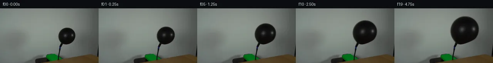
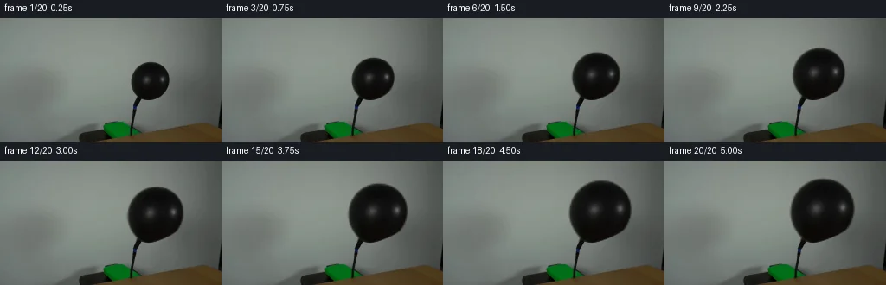
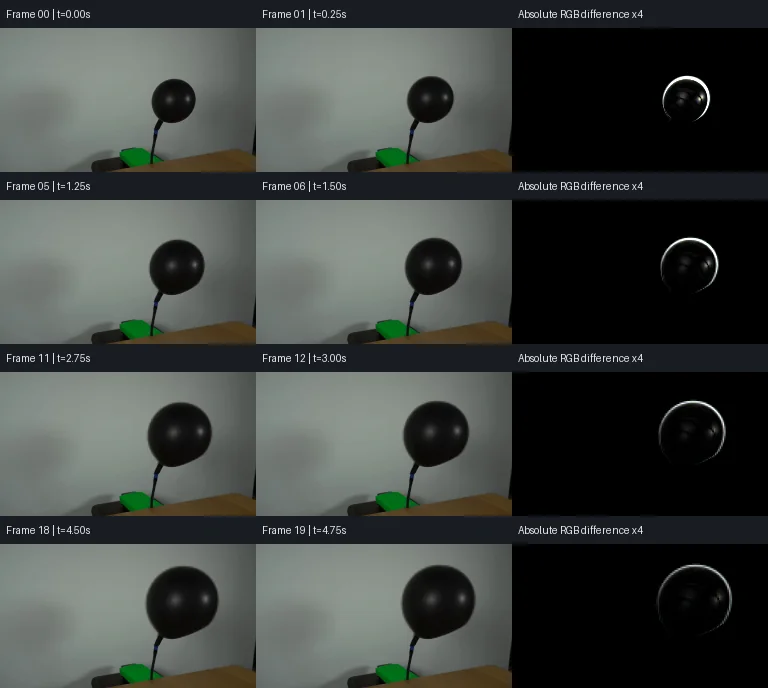

V0 · 初版 · 最终提交
![]()
Observable Generation Trace
把最终像素视频、Harness 冻结的每轮候选、真实工具事件和 Agent 自述放在同一页。可观测证据与模型自述分开标记，避免把“模型说它检查过”误当成真实工具调用。
![首帧]()
Static locked-off single-shot with fixed frame throughout filmed with constant framerate in real-time. The scene shows a realistic scientific demonstration. The scene only contains the described setup and actions. The balloon is attached to a black hose that points upwards from behind a wooden table. Air is being pumped into the black balloon.
首帧显示在左侧播放器初始画面。Track 权限、隔离和 tensor 一致性来自 run manifest，而不是 METHOD.md。
默认勾选初版和最终版；可选其他版本一起同步播放。仅检查图更新的连续重复快照已合并，回退旧视频仍保留为一次修订。
Observable events
来源：events.jsonl + run manifest
此 Track 禁止读取输出图片。逐轮预览由外部 Harness 自动冻结，只用于事后审计，生成 Agent 当时看不到这些页面。
Frozen candidates
每张图来自该 round 的真实 00 / 01 / 05 / 10 / 19 帧

pixels f8c89633bfb1488d · code e0fc7d68e65383ef
--- previous/generate.py
+++ current/generate.py
@@ -0,0 +1,175 @@
+"""Deterministic source-pixel animation of a balloon inflating on a fixed hose.
+
+Only first_frame.png and prompt.txt are scene inputs. Uses local numerical
+matting and a neck-constrained inverse warp; no image models or rendering engines.
+"""
+from pathlib import Path
+import json
+import numpy as np
+from PIL import Image, ImageDraw
+from scipy import ndimage as ndi
+from artifact_io import save
+
+ROOT = Path(__file__).resolve().parent
+W, H, N = 256, 144, 20
+ANCHOR_X, ANCHOR_Y = 160.0, 95.0
+VOLUME_GAIN = 3.65
+
+
+def smoothstep(v):
+ v = np.clip(v, 0, 1)
+ return v * v * (3 - 2 * v)
+
+
+def source_layers(source):
+ """Recover a foreground matte, source texture, and fixed clean backdrop."""
+ yy, xx = np.mgrid[:H, :W]
+ x, y = (xx - 176) / 50.0, (yy - 68) / 65.0
+ powers = [(i, j) for i in range(5) for j in range(5 - i)]
+ design = np.stack([x ** i * y ** j for i, j in powers], axis=-1)
+ observed_wall = (xx >= 128) & (xx <= 239) & (yy >= 12) & (yy <= 115)
+ observed_wall &= ~((xx >= 148) & (xx <= 199) & (yy >= 48) & (yy <= 97))
+ observed_wall &= ~((xx >= 150) & (xx <= 162) & (yy >= 91))
+ coefficients = np.linalg.lstsq(design[observed_wall], source[observed_wall], rcond=None)[0]
+ wall = np.clip(design @ coefficients, 0, 255)
+ wall_error = np.sqrt(np.mean((wall[observed_wall] - source[observed_wall]) ** 2, axis=0))
+
+ # Contrast-defined silhouette; fill reflection holes without filling the
+ # genuine opening between the neck and the lowest right-hand rim.
+ core = (source.mean(axis=2) < 80) & (xx >= 149) & (xx <= 198) & (yy >= 50) & (yy <= 95)
+ core = ndi.binary_fill_holes(core)
+ interior = ndi.binary_erosion(core, iterations=2)
+ _, indices = ndi.distance_transform_edt(~interior, return_indices=True)
+ edge_color = source[indices[0], indices[1]]
+ contrast = wall - edge_color
+ alpha = np.sum(contrast * (wall - source), axis=2) / np.maximum(np.sum(contrast ** 2, axis=2), 1)
+ alpha = np.clip(alpha, 0, 1) * ndi.binary_dilation(core, iterations=2)
+ alpha[interior] = 1
+ alpha[(yy > 95) | (alpha < 0.035)] = 0
+
+ # Decontaminate the edge RGB using the measured alpha and local wall color.
+ texture = (source - (1 - alpha[..., None]) * wall) / np.maximum(alpha[..., None], 0.001)
+ texture = np.clip(texture, 0, 255)
+ support = alpha > 0
+ _, nearest = ndi.distance_transform_edt(~support, return_indices=True)
+ texture[~support] = texture[nearest[0][~support], nearest[1][~support]]
+ fixed = source.copy()
+ fixed[support] = wall[support]
+ reconstruction = texture * alpha[..., None] + fixed * (1 - alpha[..., None])
+ source_reconstruction_error = np.abs(reconstruction - source)
+ return fixed, texture, alpha, {
+ 'wall_fit_rmse_rgb': wall_error.tolist(),
+ 'source_matte_area': float(alpha.sum()),
+ 'matte_reconstruction_mae': float(source_reconstruction_error.mean()),
+ 'matte_reconstruction_max_error': float(source_reconstruction_error.max()),
+ }
+
+
+def expand_frame(source, fixed, texture, matte, scale):
+ """Expand about the attachment; the last 10 source rows have a neck constraint."""
+ yy, xx = np.mgrid[:H, :W].astype(np.float64)
+ source_rows = np.linspace(-24, H + 24, 8193)
+ freedom = smoothstep((ANCHOR_Y - source_rows) / 10.0)
+ local_scale = 1 + (scale - 1) * freedom
+ destination_rows = ANCHOR_Y + (source_rows - ANCHOR_Y) * local_scale
+ assert np.all(np.diff(destination_rows) > 0), 'Inverse map must be one-to-one'
+ sy = np.interp(yy, destination_rows, source_rows)
+ lateral_scale = 1 + (scale - 1) * smoothstep((ANCHOR_Y - sy) / 10.0)
+ sx = ANCHOR_X + (xx - ANCHOR_X) / lateral_scale
+ coords = np.array([sy, sx])
+ alpha = ndi.map_coordinates(matte, coords, order=1, mode='constant', cval=0, prefilter=False)
+ colors = np.stack([
+ ndi.map_coordinates(texture[..., channel], coords, order=1, mode='nearest', prefilter=False)
+ for channel in range(3)
+ ], axis=-1)
+ frame = np.rint(np.clip(colors * alpha[..., None] + fixed * (1 - alpha[..., None]), 0, 255)).astype(np.uint8)
+ # Explicit attachment lock: do not touch the hose, table or any pixels below.
+ frame[95:] = source[95:].astype(np.uint8)
… diff truncated; 88 more lines …pixels f8c89633bfb1488d · code 2e6ac130d9817fa5
--- previous/generate.py
+++ current/generate.py
@@ -4,7 +4,11 @@
matting and a neck-constrained inverse warp; no image models or rendering engines.
"""
from pathlib import Path
+import sys
+sys.dont_write_bytecode = True
+import base64
import json
+import re
import numpy as np
from PIL import Image, ImageDraw
from scipy import ndimage as ndi
@@ -113,6 +117,7 @@
assert int(tensor.max()) <= 0xFFFFFF
first = np.asarray(Image.open(ROOT / 'first_frame.png').convert('RGB'))
assert np.array_equal(frames[0], first)
+ assert (ROOT / 'frames' / '00.png').read_bytes() == (ROOT / 'first_frame.png').read_bytes()
for t in range(N):
png = np.asarray(Image.open(ROOT / 'frames' / f'{t:02d}.png').convert('RGB'))
packed = tensor[:, :, t]
@@ -120,6 +125,25 @@
assert np.array_equal(png, rgb), f'PNG/tensor mismatch at frame {t}'
assert np.array_equal(png, frames[t]), f'PNG/memory mismatch at frame {t}'
assert np.array_equal(frames[t, 95:], first[95:]), f'Hose/table changed at frame {t}'
+ html = (ROOT / 'index.html').read_text()
+ payload = json.loads(re.search(r'const DATA=(.*?);\nfunction unpack', html).group(1))
+ decode = lambda packet: np.frombuffer(base64.b64decode(packet), dtype='<u4')
+ player_frame = decode(payload['first']).copy()
+ assert np.array_equal(player_frame, tensor[:, :, 0].ravel())
+ assert len(payload['deltas']) == N - 1
+ for t, encoded in enumerate(payload['deltas'], 1):
+ packet = decode(encoded)
+ i, previous_end = 0, 0
+ while i < len(packet):
+ start, count = map(int, packet[i:i + 2])
+ i += 2
+ assert start >= previous_end and count > 0 and start + count <= H * W
+ player_frame[start:start + count] = packet[i:i + count]
+ i += count
+ previous_end = start + count
+ assert i == len(packet)
+ assert np.array_equal(player_frame, tensor[:, :, t].ravel())
+ assert '},250)' in html
areas = [float(a.sum()) for a in alpha_frames]
assert np.all(np.diff(areas) > 0), 'Balloon projected area must increase every frame'
per_frame = []
@@ -143,6 +167,7 @@
report = {'frame_count': N, 'width': W, 'height': H, 'fps': 4, 'duration_seconds': 5,
'tensor_shape': list(tensor.shape), 'tensor_dtype': str(tensor.dtype),
'png_tensor_exact_match': True, 'first_frame_exact_match': True,
+ 'first_png_file_bytes_exact_match': True, 'player_tensor_exact_match': True,
'hose_table_fixed_below_y95': True, 'monotonic_projected_area': True,
'review_method': 'Local code, numeric RGB, text luminance maps, artifact assertions; no image tools.',
'matting': layer_stats, 'frames': per_frame}Final visual checks
Harness 保存的最终产物


Agent claims
以下文字由生成 Agent 撰写，不等同于工具证据
The source was examined only by local Pillow/NumPy code, numeric RGB samples, luminance rows, and text renderings of numerical brightness. No image Read/View tool was used. Coordinates below use the top-left origin; x is horizontal.
Air flows into the balloon continuously. An idealized constant volumetric inflow raises relative volume from 1.0 to 4.65 over the sampled interval. Linear body dimensions follow the cube root of volume, reaching 1.669×. This gives a final main body roughly 74 pixels across, with its top around 20 pixels, and keeps it fully in frame. A smooth 10-pixel source-space neck constraint reduces deformation to zero at y=95. The balloon stays attached, becomes fuller, and does not burst or deflate. The hose, table, wall, exposure, and framing are fixed. No hands, pump, text, or other objects are introduced.
At 4 fps, frame 00 samples t=0.00 s and frame 19 samples t=4.75 s; each frame is displayed for 0.25 s, giving the required five-second sequence.
| Frame | Time (s) | Relative volume | Main body scale | Event |
|---|---|---|---|---|
| 00 | 0.00 | 1.000 | 1.000 | Exact source frame; inflation begins from the existing balloon. |
| 01 | 0.25 | 1.192 | 1.060 | Steady inflation; fixed neck/hose and camera; reflections follow expanding surface. |
| 02 | 0.50 | 1.384 | 1.114 | Steady inflation; fixed neck/hose and camera; reflections follow expanding surface. |
| 03 | 0.75 | 1.576 | 1.164 | Steady inflation; fixed neck/hose and camera; reflections follow expanding surface. |
| 04 | 1.00 | 1.768 | 1.209 | Steady inflation; fixed neck/hose and camera; reflections follow expanding surface. |
| 05 | 1.25 | 1.961 | 1.252 | Steady inflation; fixed neck/hose and camera; reflections follow expanding surface. |
| 06 | 1.50 | 2.153 | 1.291 | Steady inflation; fixed neck/hose and camera; reflections follow expanding surface. |
| 07 | 1.75 | 2.345 | 1.329 | Steady inflation; fixed neck/hose and camera; reflections follow expanding surface. |
| 08 | 2.00 | 2.537 | 1.364 | Steady inflation; fixed neck/hose and camera; reflections follow expanding surface. |
| 09 | 2.25 | 2.729 | 1.397 | Steady inflation; fixed neck/hose and camera; reflections follow expanding surface. |
| 10 | 2.50 | 2.921 | 1.429 | Steady inflation; fixed neck/hose and camera; reflections follow expanding surface. |
| 11 | 2.75 | 3.113 | 1.460 | Steady inflation; fixed neck/hose and camera; reflections follow expanding surface. |
| 12 | 3.00 | 3.305 | 1.490 | Steady inflation; fixed neck/hose and camera; reflections follow expanding surface. |
| 13 | 3.25 | 3.497 | 1.518 | Steady inflation; fixed neck/hose and camera; reflections follow expanding surface. |
| 14 | 3.50 | 3.689 | 1.545 | Steady inflation; fixed neck/hose and camera; reflections follow expanding surface. |
| 15 | 3.75 | 3.882 | 1.572 | Steady inflation; fixed neck/hose and camera; reflections follow expanding surface. |
| 16 | 4.00 | 4.074 | 1.597 | Steady inflation; fixed neck/hose and camera; reflections follow expanding surface. |
| 17 | 4.25 | 4.266 | 1.622 | Steady inflation; fixed neck/hose and camera; reflections follow expanding surface. |
| 18 | 4.50 | 4.458 | 1.646 | Steady inflation; fixed neck/hose and camera; reflections follow expanding surface. |
| 19 | 4.75 | 4.650 | 1.669 | Steady inflation; fixed neck/hose and camera; reflections follow expanding surface. |
Derive a local balloon matte from numerical contrast to a fitted background, fill the two reflection holes, and recover foreground RGB at antialiased edges. Use an inverse neck-constrained expansion warp, retaining the measured source texture and highlights. Composite onto the original fixed scene, with a local background estimate only where needed to remove the original balloon. Save the exact source pixels directly as frame 00. Generate the artifact contact sheets without using them as image inputs, and review continuity and constraints by numeric checks. Document the implemented method and limitations.
A deterministic five-second, locked-camera continuation of the source scene: the black balloon expands continuously while its hose attachment, the hose, wooden table, background and framing remain stationary. There are 20 RGB frames at 256 × 144, played at 4 fps. No objects or actions beyond the given setup and inflation are introduced.
The method is a numerical source-texture deformation and alpha composite, with a simple volume-based growth law. It does not solve latex stress, air pressure, or new three-dimensional lighting. Surface reflections follow the expanding source texture. Small wall regions exposed by the constrained neck use the local polynomial estimate. No external models, engines, scene assets, network access, or subagents are used.
Frame n samples t=n/4 seconds: 0.00 through 4.75 seconds. Every frame is held for 0.25 seconds, yielding a five-second sequence. pixels.npz contains the array named pixels with shape (144,256,20), dtype uint32 and layout [y,x,t]. Each value is packed as 0xRRGGBB. index.html embeds all frames, reconstructing successive frames from lossless contiguous RGB-pixel delta packets; its playback interval is 250 ms and it works without a network connection.
Run python generate.py from this workspace to regenerate all outputs and
verification.json. Assertions establish:
Measured projected alpha area grows from 1534.23 to 4201.90 pixels. Final alpha>0.5 bounds are x=146–218, y=21–95. Whole-frame consecutive RGB mean absolute changes decrease smoothly from 0.656 to 0.389 levels; there is no first-step jump or discrete inflation stage. The recovered source matte reconstructs the original with mean absolute RGB error 0.0000502 levels (maximum 1.094 at a clipped edge channel); frame 00 is saved exactly regardless.
Review is numerical: source and final luminance text maps, coordinates, connected-component checks, monotonic area, temporal pixel changes, and lossless artifact/player decoding. The contact sheets were generated as required artifacts but were not opened with an image tool. No visual review is claimed.